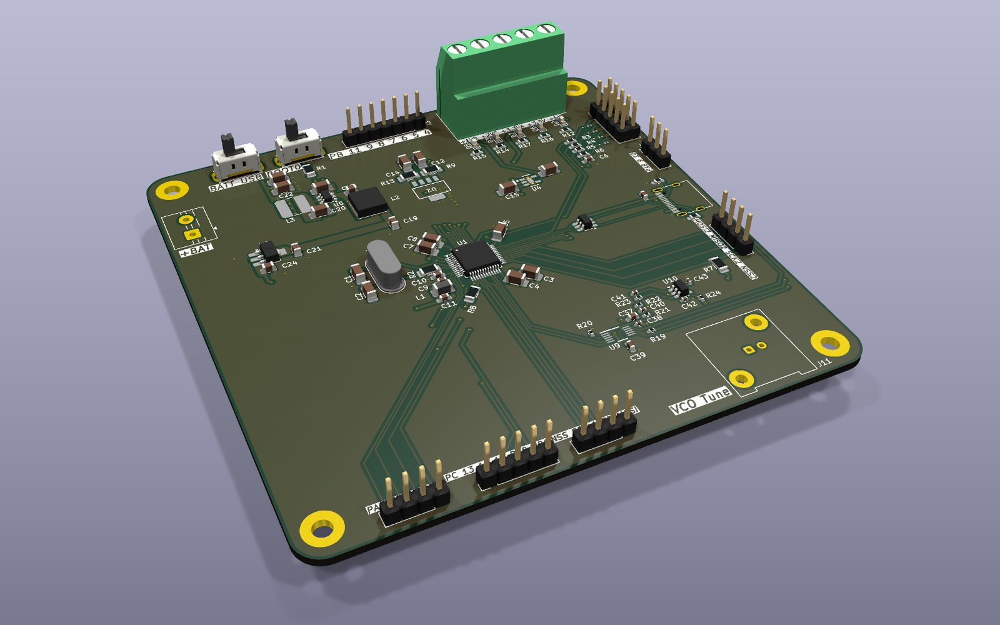
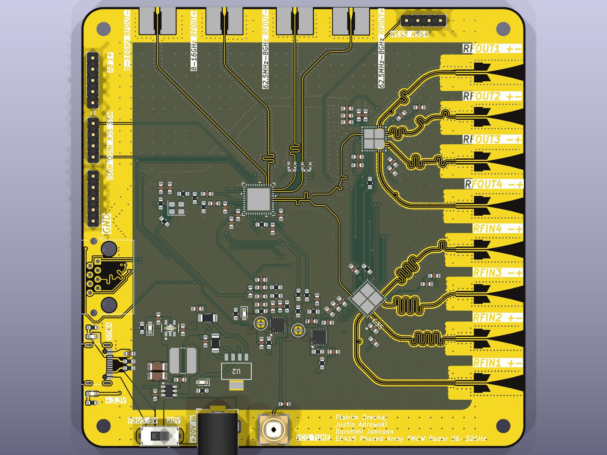
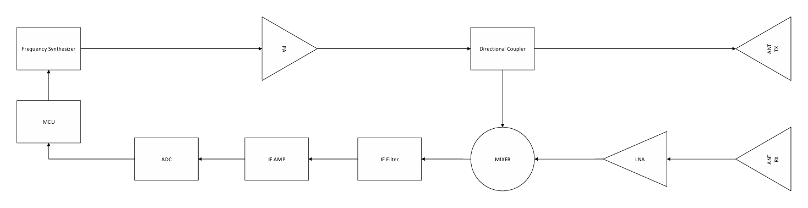

Microwave circuit hardware
design from scratch,
built to transmit, receive, and match
Welcome — I'm Flatrim, an Electrical Engineering student at Iowa State (GPA 3.55, exp. May 2027) and a researcher at the Applied Microwave Testing Lab. I design radar front-ends, VNA hardware, and RF PCBs, then write the software that drives them on the bench. Open any project below to see the board, my role, and what I learned building it.
I want to build the hardware that lets systems see and talk at microwave frequencies — radar front-ends, test instruments, and the mixed-signal boards that connect them to software.
Most of what I've learned has come from carrying a design the whole way: block diagram, simulation in ADS, schematic and stackup in KiCad, layout, and then the slow part — bring-up and measurement in the lab. After graduating I want to join an RF/microwave hardware team (radar, test & measurement, or wireless) where I can keep doing that full loop on harder problems and learn from engineers who have shipped real products.
Longer term I'd like to grow toward graduate-level depth in electromagnetics and microwave circuit design and lead the design of measurement systems — like the VNA and SAR imaging scanner I work on now — that make high-frequency hardware cheaper and easier to test.
Description
Flying Radar is our senior design project: a radar system whose digital back end runs on an FPGA, with peripherals (ADC/DAC, synthesizer) configured over SPI from VHDL.
To add: one-paragraph description of the system — what it detects or images, the platform it flies on, frequency band, and the client/advisor.
My role
FPGA firmware — writing the VHDL SPI interface that configures the radar's mixed-signal peripherals.
To add: your official team role(s) and the subsystems you owned.
Skills & knowledge gained
- VHDL design and simulation of serial peripheral interfaces
- Radar system-level requirements and link budgets
- Working within a multi-discipline team with a client, schedule, and design reviews
To add: anything else specific you learned this year.
Big-picture contribution
To add: why this project matters — who uses the result, and what it enables that wasn't possible or affordable before.
Supporting documents
Source repository ↗ To add: team website, design document, and poster/presentation linksDescription
- 2-port VNA covering 0.5–10 GHz on a 6-layer board; STM32H7 digitizes the downconverter IF through a dual high-speed ADC (AD8138 differential drivers) and streams S-parameters over 100 Mbps Ethernet or USB-C
- 2.3–2.8 GHz Colpitts VCO: −1.8 to −11 dBm into 50 Ω, phase noise −169 dBc/Hz at 1 MHz offset
- 90° hybrid at 2.45 GHz (−3 dB coupling, −44 dB isolation); 180° rat-race (−3 dB over 2 GHz BW)
- Balanced mixer −5.6 dB conversion loss; amplifier S21 = 15.47 dB, S11 = −34.3 dB; gap-coupled BPF with 6% fractional BW
My role
Sole designer — system architecture, ADS simulation of every RF subsystem, schematic capture, 6-layer stackup, and motherboard layout.
Skills & knowledge gained
- Heterodyne receiver architecture and dynamic-range budgeting
- Oscillator, coupler, mixer, and filter design with EM co-simulation
- Mixed-signal layout: split analog/digital supplies, ferrite isolation, controlled-impedance stackup
Resources used
Keysight ADS, KiCad 9, Pozar's Microwave Engineering, Analog Devices / ST datasheets and application notes, EE 414/514 lab equipment.

Radar main board — KiCad 3D
Up/down converter — KiCad 3D
Bistatic block diagramDescription
- Linear-chirp FMCW radar across 26.5–40 GHz; the beat frequency between TX and RX gives target range
- Chain: ADF4371 synthesizer → ADAR2001 upconverter → PA → 20 dB coupler → TX antenna; RX antenna → LNA → ADAR2004 downconverter → IF filter/amp → AD4080 20-bit ADC → STM32H730
- Separate power delivery board (2.5 V / 1.8 V / 3.3 V analog and digital rails) and a differential Vivaldi antenna
My role
System architect and board designer — part selection, block diagrams (bistatic and monostatic), schematics, and layout of all three boards.
Skills & knowledge gained
- Millimeter-wave part selection and link-budget trade-offs
- Differential IF routing, ESD protection, and multi-rail power sequencing
- Splitting a large design into hierarchical boards
Resources used
KiCad 9, STM32CubeIDE, Analog Devices / MACOM / Mini-Circuits datasheets, EE 418 course material.

Description
- PWM signals with controlled phase offsets drive each antenna element; the relative phase sets where the array's beam points, with no moving parts
- Printed Vivaldi elements and coax feeds integrated on the board; several layout revisions tracked in the repo
My role
Sole designer — beam-steering concept, antenna design, schematic, and PCB revisions.
Skills & knowledge gained
- Array factor and phase-steering theory applied to real hardware
- Printed antenna (Vivaldi) layout and feed design
- Iterating a board across revisions and documenting changes
Resources used
KiCad 9, Balanis' Antenna Theory, EM simulation, online application notes on phased arrays.
Description
- ESP32-S3 with external flash/PSRAM, Teseo-LIV3R GNSS receiver, and BMI323 IMU
- GNSS RF front end: chip antenna → SAW filter → BGA725 LNA
- USB-C with ESD protection, TLV62569 buck and LDO rails
My role
Sole designer — schematic, RF front end, and 4-layer layout for the lab's scanning setup.
Skills & knowledge gained
- Laying out an RF receive path next to a noisy MCU
- Sensor fusion requirements (GNSS + IMU)
- USB-C power and ESD design practices
Resources used
KiCad, Espressif hardware design guidelines, ST Teseo and Bosch BMI323 datasheets, Infineon LNA application notes.
Description
- PySide6 GUI coordinating XY motion with VNA measurements at each point of a generated raster pattern
- Plugin architecture: G-code (BigTreeTech) and Gecko motion drivers; Anritsu ShockLine / 37397C VNA drivers over PyVISA
- Data saved to HDF5 and processed with a SAR reconstruction algorithm; live S-parameter and 3D views
My role
Lead developer for the lab — architecture, instrument drivers, GUI, data pipeline, and user manual.
Skills & knowledge gained
- Instrument control (SCPI / VISA) and motion control
- SAR imaging fundamentals and handling large measurement datasets
- Writing software other researchers depend on: documentation, plugins, testing
Resources used
Python (NumPy, SciPy, scikit-rf, h5py, PyVista), Anritsu programming manuals, lab mentors and published SAR imaging papers.
Description
- Press "Roll!" and two LED dice (14 LEDs) show a random 2D6 result
- STM32F103C8T6 with 16 MHz crystal, AP63203 buck regulator (3.8–32 V input), battery/USB power select, boot switch, and SWD header
My role
Workshop participant — built the board from the workshop's reference design (by M. Smith, C. Van Weelden, and E. Strohm), doing the schematic capture, footprint assignment, placement, routing, and DRC myself against the workshop checklist.
Skills & knowledge gained
- KiCad workflow from schematic to fabrication outputs
- Switching regulator layout, decoupling, and crystal placement
Resources used
KiCad 9, workshop checklist and layout reference guide, ST and Diodes Inc. datasheets.
Description
- Coupled-resonator and stub filters with ADS layout and EM co-simulation
- Amplifier design with stability circles and matching networks; 2.45 GHz oscillator
- Directional coupler, Wilkinson divider, stub matching, and quarter-wave transformers
My role
Designed, simulated, fabricated, and measured each lab circuit; several became the starting point for the VNA subsystems.
Skills & knowledge gained
- Smith chart matching and S-parameter measurement
- Comparing simulation with measurement and explaining the difference
Resources used
Keysight ADS, VNA and spectrum analyzer, Pozar's Microwave Engineering, course lab manuals.
Undergraduate Researcher — Applied Microwave Testing Lab
Duties & projects
- Built the SAR microwave imaging scanner software: motion control, VNA integration, HDF5 data pipeline
- Designed RF hardware for the lab: VNA motherboard and ESP32 probe position monitor
- Wrote a user manual so other researchers can run scans independently
Technical skills
- VNA measurement and calibration, SAR imaging
- Python instrument automation (PyVISA, SCPI)
- RF PCB design in KiCad and ADS
Soft skills
- Turning loosely defined research needs into working tools
- Explaining design choices to faculty and graduate students
- Managing my own schedule across research and coursework
Evaluations & presentations
To add: supervisor evaluation or feedback, and any lab meetings, posters, or talks you presented.
To add: any internship or co-op (company, dates, duties, skills learned, evaluation).
EDA / Simulation
Languages
Lab
Relevant coursework
Education
B.S. Electrical Engineering, Iowa State University — expected May 2027 · GPA 3.55
Research
Applied Microwave Testing Lab — SAR imaging systems, VNA hardware, RF PCBs.
To add: published papers or conference submissions, if any.
Awards
To add: scholarships, Dean's List semesters, competitions.
Activities
To add: student organizations, workshops, volunteering.
To add: put your resume at docs/Flatrim_Dreshaj_Resume.pdf.
To add: your General Education Reflection. It should answer:
- What have your general education electives taught you that helps you evaluate and formulate engineering solutions beyond the technical side? How do they change how you think about an engineering problem?
- Using at least two specific classes, what other dimensions (economic, global, societal) do you now consider, and what impact do they have?
To add: your Cumulative Reflection. It should cover:
- The bigger picture — designing systems, teamwork, communication, and ethical responsibility
- Resources beyond the classroom — journals, experts, peers, libraries
- Lifelong learning outside class — research, student orgs, career fairs
- Adapting what you learned to new tasks and challenges
- What you would change if you started over
- How you learned a recent engineering topic, start to finish
- Turning theory into a practical result, and a time creativity solved a problem
- How your learning strategies have changed over time
- Where you want to keep growing as an engineer
To add: a short summary of the paper's topic and conclusion, and put the PDF at docs/Ethics_Paper_EE394.pdf.
Flatrim Dreshaj
B.S. Electrical Engineering, Iowa State University (GPA 3.55, exp. May 2027). Researcher at the Applied Microwave Testing Lab building SAR imaging systems, VNA hardware, and RF PCBs. I'm looking for RF / microwave hardware roles — reach out by email.